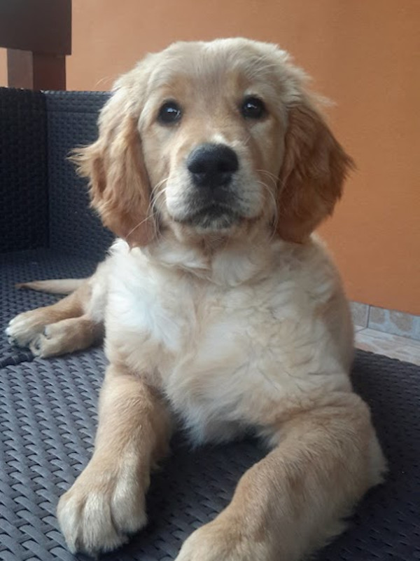
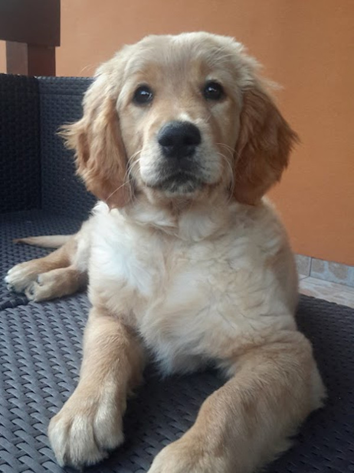
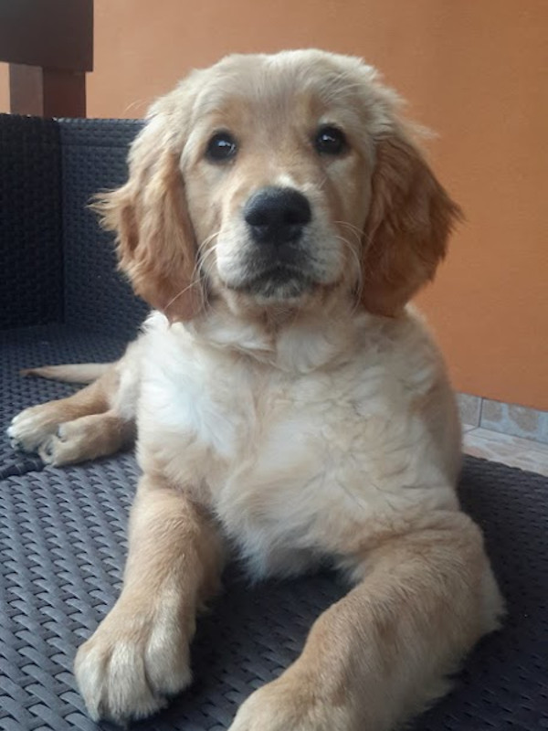

") 

A Golden Retriever egy kedves, barátságos kutyafajta, mely Skóciából származik.
A fajta tudományos megnevezése: golden retriever - Canis Lupus Familiaris.
Fontos! Ha gazdi szeretnél lenni, nézz utána, hogy a felelős kutyatartással kapcsolatban milyen ajánlások és kötelezettségek vannak!

Ha szeretnél még több kutyás fotót nézegetni, látogasd meg a Pixabay portál - Goldenek fotó oldalát!
A videón is láthatod, hogy Goldi nagyon szeret a földön hemperegni, amely miatt általában koszosan jövünk haza a sétából.